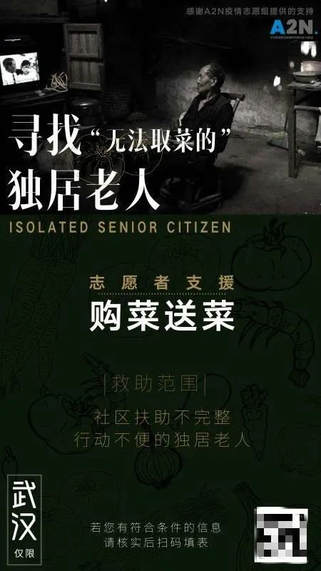

我在美国为武汉患者整理求救信息｜三明治
原文链接 备份链接 文｜陈恕行 📍 发自美国湾区 1 南海岸的二月已经有了初夏的感觉，从暖风中穿过，阳光里能清晰地看到一粒粒金黄的花粉从树上纷纷落下。 每天下午两点，我录入完微博上最新的求助帖，走出图书馆回家。等着国内的志愿者伙伴们醒来前 …
澎湃新闻记者 喻琰
一张黑底海报，画中央是一位老人，标题是，寻找“无法取菜的”独居老人。
武汉封闭社区以来，买菜做饭成了许多独居老人面临的难题。他们不会用手机团购，儿女也不在身边。
26岁的武汉人小鱼（化名）和志愿者在社交媒体上发起“寻找武汉市内无法取菜的独居老人”活动，贴出上述海报。3月5日，小鱼告诉澎湃新闻，活动发起后至3月5 日凌晨，他们的微信上一共通过了1434位好友申请，除去无效信息，大概有四分之三属于老人或家属求助。
对于符合帮扶标准的，小鱼所在的志愿者小组目前已经出资帮扶近30人。
不断汇总的信息中，负责线上统计、核对的小鱼大致拼凑出一个独居老人在家中的画面。“住在老旧社区里，没有办法出去买菜，有的还有一两天就会断粮。”小鱼说，活动的首要目的是解决老人的基本生活保障问题。
6日，曾接受过帮助的张先生告诉澎湃新闻，自己的亲属年过七旬，因患有慢性病，儿女不在身边，两位老人在家中买不到菜十分着急。张先生在看到朋友圈中有转发“寻找独居老人”的活动海报便扫码填写求助信息。
在通过志愿者核实后，小鱼在APP上让骑手下单购买了一周的菜量，将菜送到了两位独居老人的手中。张先生说，在社区精力有限的情况下，今后会继续考虑通过民间志愿者团队来帮两位老人买菜。
有受助的老人对他们表示感谢。也有人因为没得到帮助质疑小鱼等人是在作秀。对此，小鱼有些难过，“我们能力实在有限”，帮不了每一个人。

志愿者小鱼发布的寻找“无法取菜的独居老人”海报 本文图片均为受访者提供
以下为小鱼的自述
寻找无法取菜的独居老人
我叫小鱼，今年26岁，在武汉经营着一家小酒吧。
受疫情影响，小酒吧暂停营业，我每天都在家里隔离，空闲时间比较多。一次偶然的机会，我在一个志愿者群里了解到，有志愿者关注到疫情之下，独居老人买菜难的问题。他们问我所在的A2N疫情志愿小组能不能够协助。我们讨论之后，决定由四位志愿者参与负责。
2月26日我们在微博上发布“寻找武汉市内无法取菜的独居老人”的海报。加微信的人很多，至少有上千人加我的微信。这些人大多数是老人的家属，以及小部分是想要帮助我们的热心网友。
我们这项志愿活动提供的帮助是解决老人基本的生活保障问题，保证老人有菜吃。还有的老人会在求助信息中提出其他要求，比如家里没有燃气了、没有口罩等。
不是所有寻求帮助的人，最后都会得到我们的帮助。在海报上，我们附上了二维码，里面需要填写一些信息。比如老人的基本信息、家属有没有主动向所在社区寻求过帮助、社区是如何答复的，还有家属为老人购菜过程中尝试过哪些购菜平台等信息。
之所以需要填写这些信息，是因为我们想要帮助的是那些边缘的、尝试过各种办法购菜但没有成功的独居老人。
汇总了这些信息后，我大致拼凑出这些独居老人的特征。有一些是孤寡老人；大部分是有儿女，但跟儿女不在同一个小区。还有一部分老人是身体有残疾、慢性病，或是急性病的。
寻求帮助的这些信息紧迫程度不一，我们认为最紧迫的情况是老人家里的菜只够撑两三天和一些身体不好，有疾病的老人。
如何帮助这些老人，我们有三个解决办法。第一是我们志愿者个人出资，叫跑腿小哥帮忙买菜，然后送给老人。
第二种，如果距离我们志愿者比较近的话，我们志愿者会自己去菜场买菜，然后开车送给老人。
第三种情况，我们帮他们跟社区对接，寻求社区的援助。
给老人送的菜，我们会根据菜场的实际情况来决定。有时候考虑到买太多的话，有一些蔬菜容易坏，所以我们一次送菜的量是够老人食用一个星期的量，土豆、南瓜、白萝卜，这些放的比较久的食材可能会多给一些。
很重要的环节是核对老人信息
从收集独居老人信息开始，到线下送菜，还有一个很重要的环节是核对老人信息。我和我们小伙伴四个人，每个人都会打电话一一核实情况。
信息核对过程中会出现很多问题。大部分情况下，我们需要向老人本人进行核实，会有部分亲属没有尝试过其他办法，就直接让我们帮助。
这个月的3号和4号，这两天我遇到一个很糟心的事情，我们直接被老人家属怀疑是不是真的在做实事，这种怀疑让我们有些心寒。
老人将近90岁，住的是老社区，求助信息上说，“好久没有吃鱼、肉，每天吃点青菜和鸡蛋，剃须刀坏了，又买不到。”我们审核了这位老人的信息后，建议他再次和本社区的工作人员联系寻求帮助。因为我们了解到这个社区对独居老人是有帮扶政策的，如果他不知道怎么联系，我们可以帮助他和社区进行沟通协调。
我把这个回复信息发送给对方之后，没想到对方质疑我们平台是个“秀台”，还说，“你们太假了，早上求救，还挂电话”，要投诉我们。实际情况其实是我手机没电了，没及时接通。
我看到质疑，心情有些失落。另一位志愿者告诉我，遇到这种情况，先别慌，可能老人家属和平台存在信息沟通不对等的情况。可以通过电话和短信告诉他们，先去社区寻求帮助。“疫情期间资源有限”，这是需要跟求助者反复强调的内容，我们志愿服务也尽量规避一些风险。
后来我跟这位老人所在的社区打电话沟通。社区给我的反馈是，已经知道这位老人的情况，社区工作人员已经上门，前天送了12斤菜，这位老人的问题已经得到解决。
在帮助独居老人的过程中，我也了解了社区网格员的工作。我们跟社区的网格员沟通发现，他们的工作量大，一个网格员可能要负责一栋楼里的几百户居民的日常需求，任务量非常重。
5号早上，我还接到通知，说是武汉各街道社区在不影响正常防控工作的前提下，合理安排社区工作者轮休1到3天，可想而知，社区工作者目前可能没有休息过。

志愿者们给谢奶奶买的菜
78岁的奶奶给我唱了一首歌
和老人沟通交流的过程中需要一些同理心，设身处地为他们着想。
我的第一位求助者是一位78岁的奶奶，姓谢。在我和她沟通的过程中，我们俩成了很好的朋友。她是能够和我互相建立起信任感的一位老人。
谢奶奶一个人独居了十几年，丈夫去世后，她没有子女。将近一个月的时间，谢奶奶靠着年前屯的年货撑到了现在，最后吃的只剩下稀饭和黑木耳。了解了这些信息之后，我们开始联系各种渠道帮助她。
在沟通的过程中，她一直说不想麻烦社区，害怕浪费资源，拒绝社区的帮助。
我直接跟进她的需求后，在外卖平台下单，让骑手去菜市场买。武汉小区24小时封闭之后，像中百超市、武商超市只针对社区团购，不能个人团购，还有些菜市场可以凭借出入证进去购买。
跑腿小哥买菜也不是很好买，因为有些菜市场可能食材不够，买不到一周的量，所以也需要一些时间。
大概在3号下午6点钟左右，菜送到了谢奶奶的家里，我们给她买了快2公斤土豆，还有上海青、大白菜、里脊肉、茄子和番茄，应该够她一个人吃一周的。
给谢奶奶一周的菜花了321.7元，这些钱都是我们志愿活动发起人自己出资。目前我们的公共资金已经花了大几万了，后续关于资金的问题，我们可能会筹集一些。
跟谢奶奶聊天，她会不定时跟我分享她的生活动态。我零星了解到，她的爱好很广泛，平时在家写毛笔字、自己做衣服穿，虽然看起来她把自己的独居生活安排得很充实，但情感上，她是缺乏关爱的。

小鱼答应谢奶奶，疫情结束后去看她
在菜送上门之后，我们也并没有结束聊天。她有时候看到我忙到晚上8点多，还关心我，唱首歌给我听，闹我开心。有时候她很感谢我，给我发消息说，“你愿意与老太太聊天，不嫌弃，真好！”我看到这些很感动，我已经跟奶奶说好，疫情结束后上门去看她。
本期编辑 邢潭
推荐阅读


原文链接 备份链接 文｜陈恕行 📍 发自美国湾区 1 南海岸的二月已经有了初夏的感觉，从暖风中穿过，阳光里能清晰地看到一粒粒金黄的花粉从树上纷纷落下。 每天下午两点，我录入完微博上最新的求助帖，走出图书馆回家。等着国内的志愿者伙伴们醒来前 …
原文链接 备份链接 *************▲*************2020年2月9日，武汉市江岸区永清街道某社区，社区工作人员给困难居民送菜上门。（新华社/图） 全文共4294字，阅读大约需要10分钟。 安吉拉觉得自己仿佛活成 …
原文链接 备份链接 _ 送物资魔幻现实主义的一天 _ 作者：Haylin 坐标：武汉积玉桥 职业：自由职业戏剧人 自从进了8方公益志愿者小组，我从信息部跳到外联部跳到规划部。我们规划部就是专门联系金主爸爸和物资爸爸的。 之前联系到了一家生 …
原文链接 备份链接 黄伟说，这样的民间接力渠道效率是最高的，也不需要二次转运，“（菜）上午到，下午就直接发出去了，晚上就上桌了。” 文 | 谢婵 编辑 | 小豆 爱心菜被讨论了很久。家在武汉的陈维佳想上网看看，有没有人收到过捐赠的爱心菜。 …
原文链接 备份链接 1月20日开始，围绕新冠肺炎的各类信息进入爆发期。 “板蓝根可预防肺炎”、“抽烟喝酒可抵御病毒”，在谣言四起的同时，23日我在微信朋友圈注意到，一条名为《接力编辑：关注新型冠状病毒的可靠信息与谣言》的石墨文档被频繁转 …